D Estimating Age of Acquisition
In this Appendix, we systematically compare methods for estimating age of acquisition, using the English Words and Sentences data as a case study.
All the AOA curves.
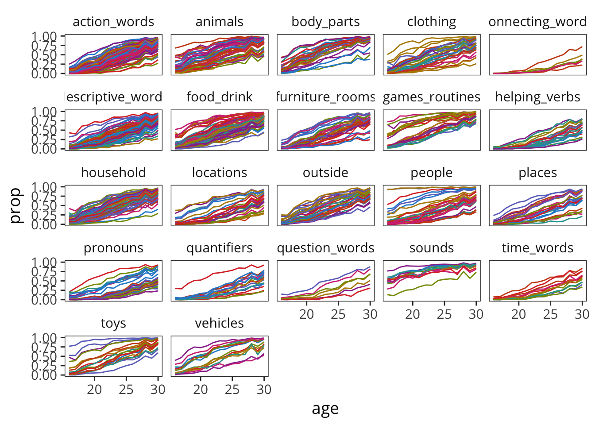
Let’s compare methods.
D.1 Empirical quantiles
First try empirical quantiles. This loses many observations that never go above 50%.
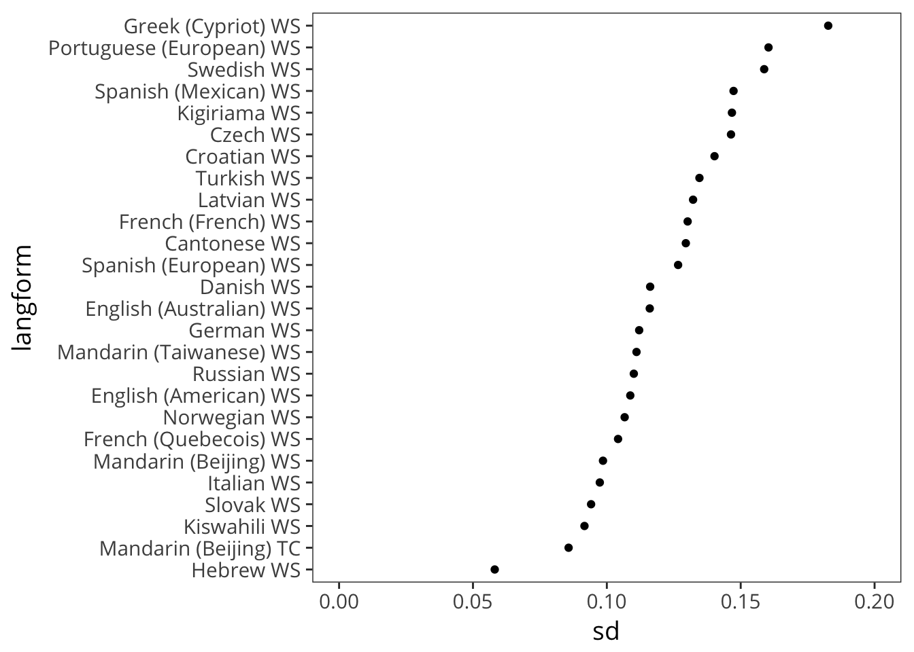
D.2 Basic GLM
Now let’s try the basic GLM version.
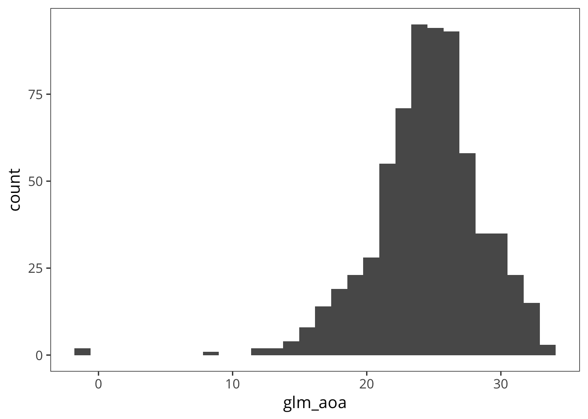
Compare. The GLM AOA gives some very early values, but it is OK with a lot of data (as in the case of English).
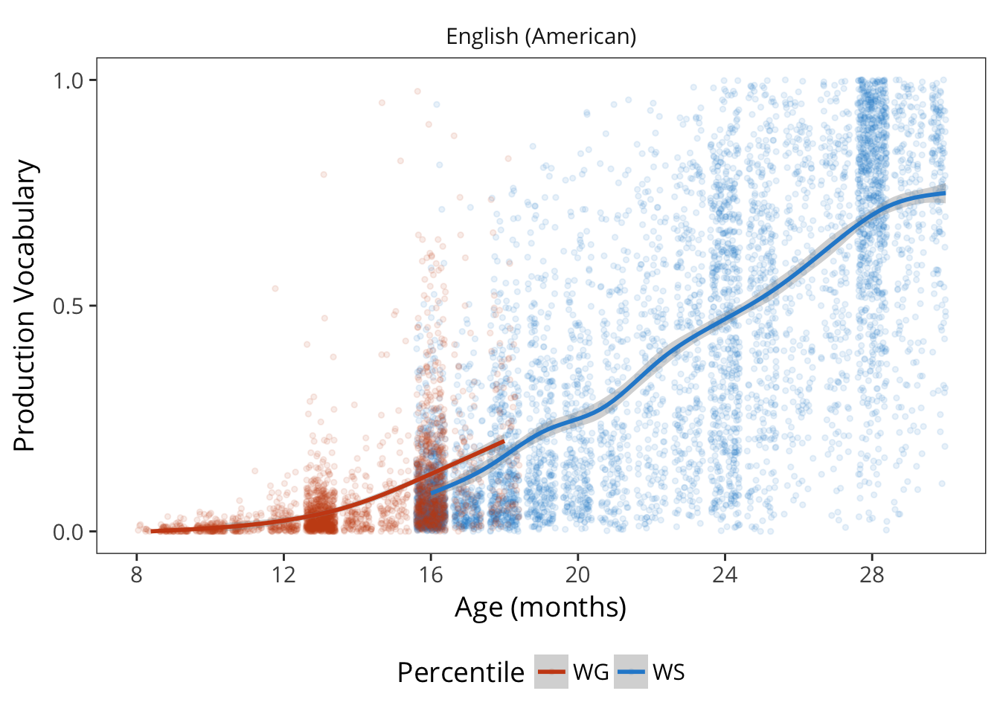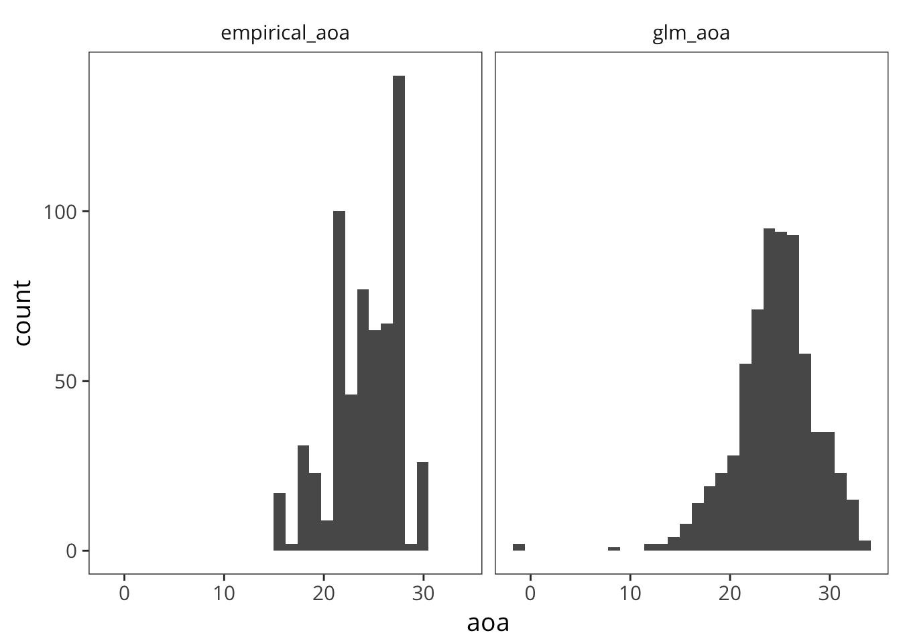
D.3 Robust GLM
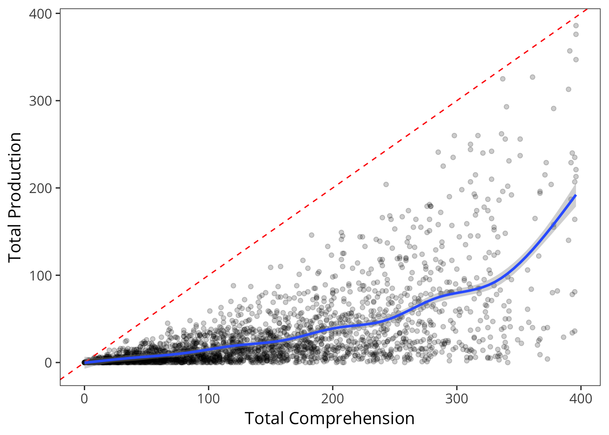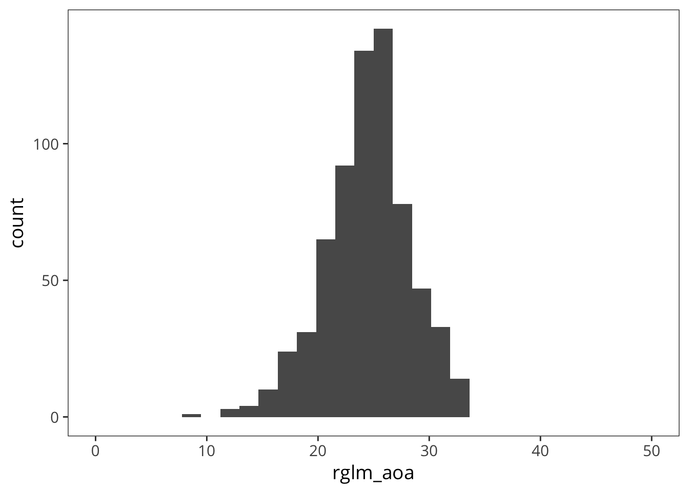
Looks totally reasonable except for the two crazy ones.
#> [1] "daddy*" "mommy*"D.4 Bayes GLM
Can we do a arm::bayesglm to regularize things a bit? Let’s explore a single curve. Basically, arm::bayesglm does exactly the same thing as GLM because of the huge amount of data, no matter what prior. Let’s try also robust GLM.
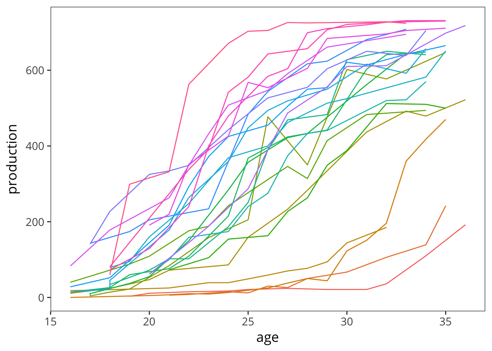
Now apply this more broadly. Note that the 50% point for logistic regression = \(- \beta_1 / \beta_2\).
arm::bayesglm is working very well here, basically moving Mommy and Daddy a bit more conservative but otherwise preserving most of the curve.
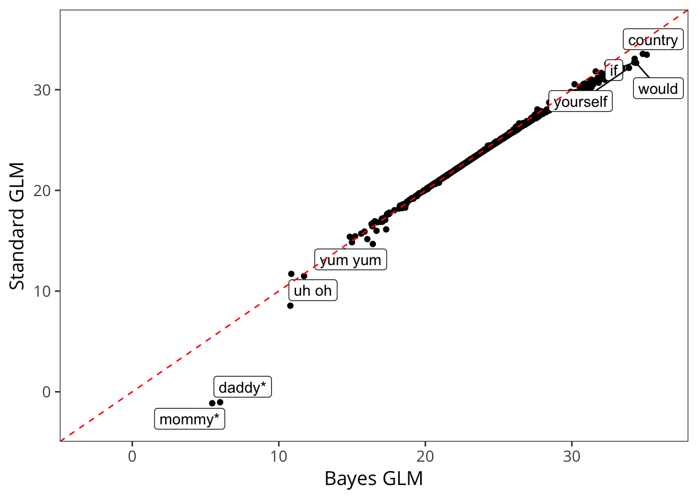
arm::bayesglm with these made-up parameters fixes some of the issues, produces a better-looking distribution with fewer crazy outliers.
D.5 Hierarchical GLM model
Set some stan settings.
The model. Constraints:
- No negative slopes - we don’t get worse at words.
- Strong prior on slopes, they should have mean and sd around .25 (empirical)
- Much weaker prior on intercepts, though yoked their SDs (perhaps too tightly?
Now reformat the data to stan format and compute.
#> In file included from file67a9249c50da.cpp:8:
#> In file included from /Library/Frameworks/R.framework/Versions/3.4/Resources/library/StanHeaders/include/src/stan/model/model_header.hpp:4:
#> In file included from /Library/Frameworks/R.framework/Versions/3.4/Resources/library/StanHeaders/include/stan/math.hpp:4:
#> In file included from /Library/Frameworks/R.framework/Versions/3.4/Resources/library/StanHeaders/include/stan/math/rev/mat.hpp:4:
#> In file included from /Library/Frameworks/R.framework/Versions/3.4/Resources/library/StanHeaders/include/stan/math/rev/core.hpp:12:
#> In file included from /Library/Frameworks/R.framework/Versions/3.4/Resources/library/StanHeaders/include/stan/math/rev/core/gevv_vvv_vari.hpp:5:
#> In file included from /Library/Frameworks/R.framework/Versions/3.4/Resources/library/StanHeaders/include/stan/math/rev/core/var.hpp:7:
#> In file included from /Library/Frameworks/R.framework/Versions/3.4/Resources/library/BH/include/boost/math/tools/config.hpp:13:
#> In file included from /Library/Frameworks/R.framework/Versions/3.4/Resources/library/BH/include/boost/config.hpp:39:
#> /Library/Frameworks/R.framework/Versions/3.4/Resources/library/BH/include/boost/config/compiler/clang.hpp:196:11: warning: 'BOOST_NO_CXX11_RVALUE_REFERENCES' macro redefined [-Wmacro-redefined]
#> # define BOOST_NO_CXX11_RVALUE_REFERENCES
#> ^
#> <command line>:6:9: note: previous definition is here
#> #define BOOST_NO_CXX11_RVALUE_REFERENCES 1
#> ^
#> In file included from file67a9249c50da.cpp:8:
#> In file included from /Library/Frameworks/R.framework/Versions/3.4/Resources/library/StanHeaders/include/src/stan/model/model_header.hpp:4:
#> In file included from /Library/Frameworks/R.framework/Versions/3.4/Resources/library/StanHeaders/include/stan/math.hpp:4:
#> In file included from /Library/Frameworks/R.framework/Versions/3.4/Resources/library/StanHeaders/include/stan/math/rev/mat.hpp:4:
#> In file included from /Library/Frameworks/R.framework/Versions/3.4/Resources/library/StanHeaders/include/stan/math/rev/core.hpp:42:
#> /Library/Frameworks/R.framework/Versions/3.4/Resources/library/StanHeaders/include/stan/math/rev/core/set_zero_all_adjoints.hpp:14:17: warning: unused function 'set_zero_all_adjoints' [-Wunused-function]
#> static void set_zero_all_adjoints() {
#> ^
#> In file included from file67a9249c50da.cpp:8:
#> In file included from /Library/Frameworks/R.framework/Versions/3.4/Resources/library/StanHeaders/include/src/stan/model/model_header.hpp:4:
#> In file included from /Library/Frameworks/R.framework/Versions/3.4/Resources/library/StanHeaders/include/stan/math.hpp:4:
#> In file included from /Library/Frameworks/R.framework/Versions/3.4/Resources/library/StanHeaders/include/stan/math/rev/mat.hpp:4:
#> In file included from /Library/Frameworks/R.framework/Versions/3.4/Resources/library/StanHeaders/include/stan/math/rev/core.hpp:43:
#> /Library/Frameworks/R.framework/Versions/3.4/Resources/library/StanHeaders/include/stan/math/rev/core/set_zero_all_adjoints_nested.hpp:17:17: warning: 'static' function 'set_zero_all_adjoints_nested' declared in header file should be declared 'static inline' [-Wunneeded-internal-declaration]
#> static void set_zero_all_adjoints_nested() {
#> ^
#> In file included from file67a9249c50da.cpp:8:
#> In file included from /Library/Frameworks/R.framework/Versions/3.4/Resources/library/StanHeaders/include/src/stan/model/model_header.hpp:4:
#> In file included from /Library/Frameworks/R.framework/Versions/3.4/Resources/library/StanHeaders/include/stan/math.hpp:4:
#> In file included from /Library/Frameworks/R.framework/Versions/3.4/Resources/library/StanHeaders/include/stan/math/rev/mat.hpp:12:
#> In file included from /Library/Frameworks/R.framework/Versions/3.4/Resources/library/StanHeaders/include/stan/math/prim/mat.hpp:58:
#> /Library/Frameworks/R.framework/Versions/3.4/Resources/library/StanHeaders/include/stan/math/prim/mat/fun/autocorrelation.hpp:17:14: warning: function 'fft_next_good_size' is not needed and will not be emitted [-Wunneeded-internal-declaration]
#> size_t fft_next_good_size(size_t N) {
#> ^
#> In file included from file67a9249c50da.cpp:8:
#> In file included from /Library/Frameworks/R.framework/Versions/3.4/Resources/library/StanHeaders/include/src/stan/model/model_header.hpp:4:
#> In file included from /Library/Frameworks/R.framework/Versions/3.4/Resources/library/StanHeaders/include/stan/math.hpp:4:
#> In file included from /Library/Frameworks/R.framework/Versions/3.4/Resources/library/StanHeaders/include/stan/math/rev/mat.hpp:12:
#> In file included from /Library/Frameworks/R.framework/Versions/3.4/Resources/library/StanHeaders/include/stan/math/prim/mat.hpp:298:
#> In file included from /Library/Frameworks/R.framework/Versions/3.4/Resources/library/StanHeaders/include/stan/math/prim/arr.hpp:38:
#> In file included from /Library/Frameworks/R.framework/Versions/3.4/Resources/library/StanHeaders/include/stan/math/prim/arr/functor/integrate_ode_rk45.hpp:13:
#> In file included from /Library/Frameworks/R.framework/Versions/3.4/Resources/library/BH/include/boost/numeric/odeint.hpp:61:
#> In file included from /Library/Frameworks/R.framework/Versions/3.4/Resources/library/BH/include/boost/numeric/odeint/util/multi_array_adaption.hpp:29:
#> In file included from /Library/Frameworks/R.framework/Versions/3.4/Resources/library/BH/include/boost/multi_array.hpp:21:
#> In file included from /Library/Frameworks/R.framework/Versions/3.4/Resources/library/BH/include/boost/multi_array/base.hpp:28:
#> /Library/Frameworks/R.framework/Versions/3.4/Resources/library/BH/include/boost/multi_array/concept_checks.hpp:42:43: warning: unused typedef 'index_range' [-Wunused-local-typedef]
#> typedef typename Array::index_range index_range;
#> ^
#> /Library/Frameworks/R.framework/Versions/3.4/Resources/library/BH/include/boost/multi_array/concept_checks.hpp:43:37: warning: unused typedef 'index' [-Wunused-local-typedef]
#> typedef typename Array::index index;
#> ^
#> /Library/Frameworks/R.framework/Versions/3.4/Resources/library/BH/include/boost/multi_array/concept_checks.hpp:53:43: warning: unused typedef 'index_range' [-Wunused-local-typedef]
#> typedef typename Array::index_range index_range;
#> ^
#> /Library/Frameworks/R.framework/Versions/3.4/Resources/library/BH/include/boost/multi_array/concept_checks.hpp:54:37: warning: unused typedef 'index' [-Wunused-local-typedef]
#> typedef typename Array::index index;
#> ^
#> 8 warnings generated.Diagnostics.
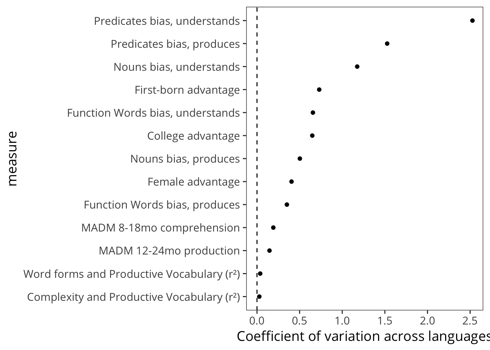
Explore parameters.
and plot again:

Check the histogram.
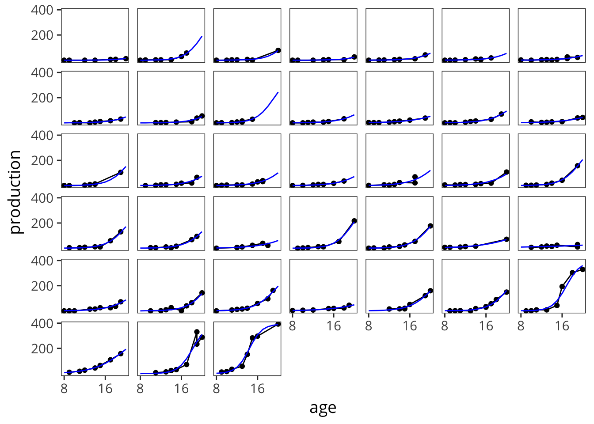
What are the crazy ones?
#> [1] uh oh mommy* daddy*
#> 680 Levels: country each an would if walker yourself snowsuit ... daddy*Don’t know what’s going on with these but everything else looks good.
D.6 Full comparison between models
Merge with previous data frame.
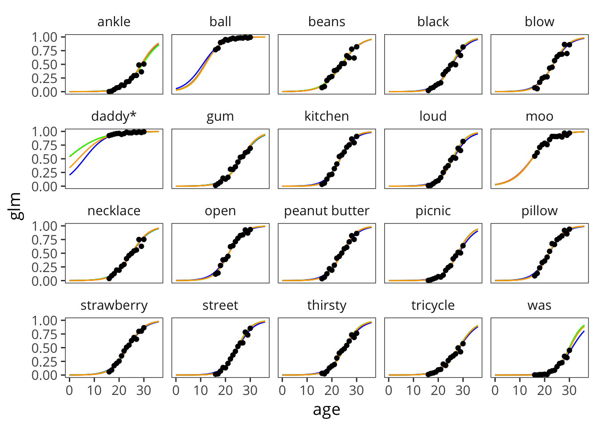
AOA distribution
Plot.
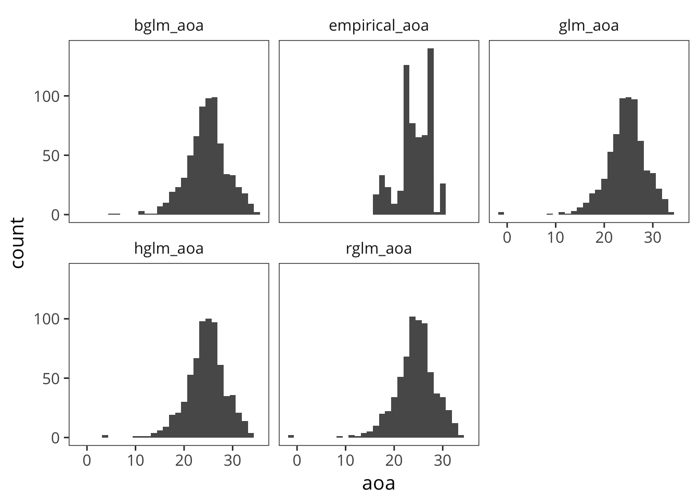
And pairs plots.
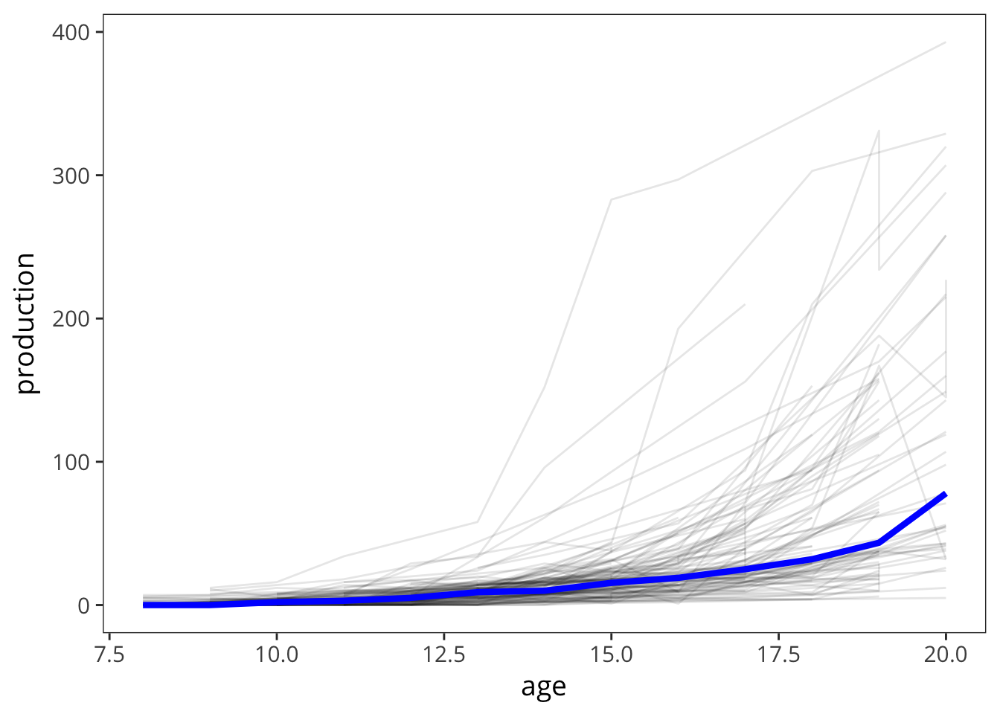
D.7 Sparsity simulations
BGLM with fairly restricted priors appeared to perform well, giving us reasonably constrained estimates for early words and otherwise being very correlated with glm and the more computation-heavy hglm.
One consideration remains: does it perform well with very sparse data?
Examples of this process with 100 children actually look much stronger overall.
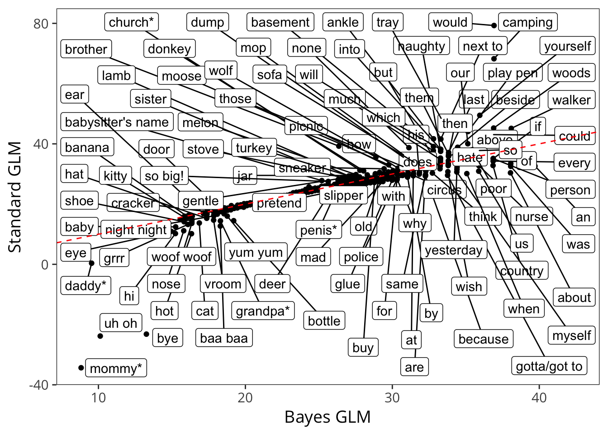 ## Conclusion
arm::bayesglm with hand-tuned priors seems to perform pretty well.
To Do: * Test with WG comprehension * Test with another language